Wireframes e Protótipo de Alta Fidelidade
Introdução
Este documento apresenta a evolução visual da solução VitalTech a partir dos wireframes apresentados pelo cliente e, posteriormente, do protótipo de alta fidelidade validado.
A documentação dos protótipos tem como objetivo registrar visualmente a interpretação dos requisitos levantados, permitindo verificar se a solução proposta está alinhada às necessidades do cliente e ao fluxo esperado de uso do sistema.
Wireframes apresentados pelo cliente
Os wireframes apresentados pelo cliente representam uma visão inicial da organização das telas, dos principais elementos de interface e dos fluxos esperados para o sistema. Eles serviram como base para compreender a estrutura desejada da solução e orientar a construção do protótipo de alta fidelidade.
Tela 1
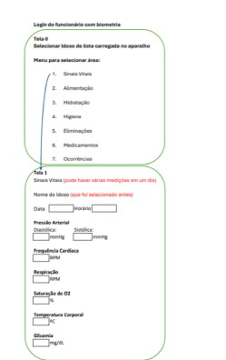
Tela 2
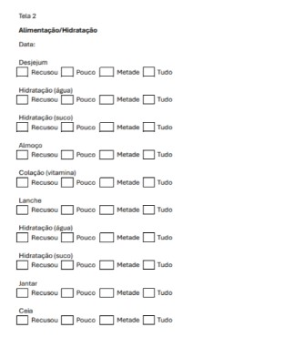
Tela 3
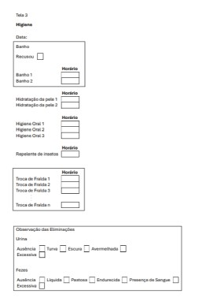
Tela 4
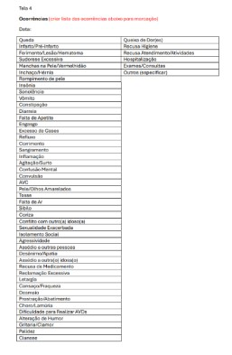
Protótipo de alta fidelidade validado pelo cliente
Após a análise dos wireframes e dos requisitos levantados, foi elaborado um protótipo de alta fidelidade com maior detalhamento visual, organização dos componentes e representação mais próxima da interface final esperada para o sistema.
O protótipo foi validado com o cliente, permitindo confirmar a aderência da proposta às necessidades identificadas durante o processo de Engenharia de Requisitos.
A apresentação interna está registrada na Review da Sprint 1, enquanto a validação posterior com o cliente consta na Ata de Reunião 06 da Sprint 1.
Tela inicial
Tela administrativa
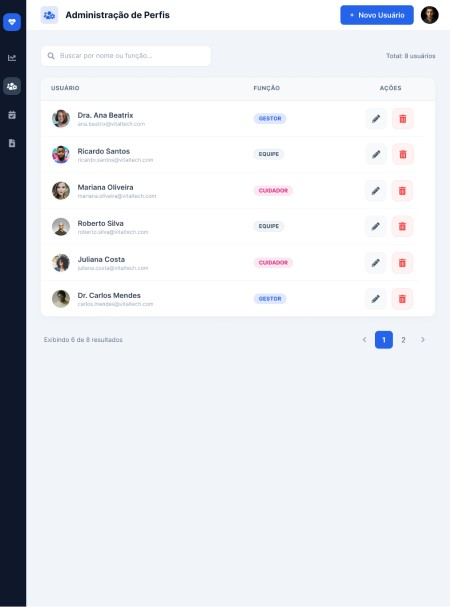
Painel de residentes
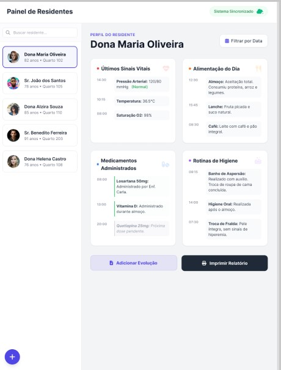
Registros
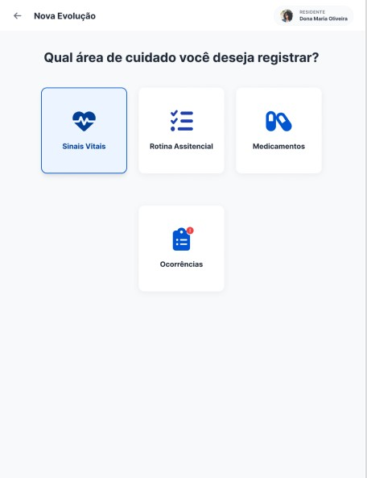
Registro de sinais vitais
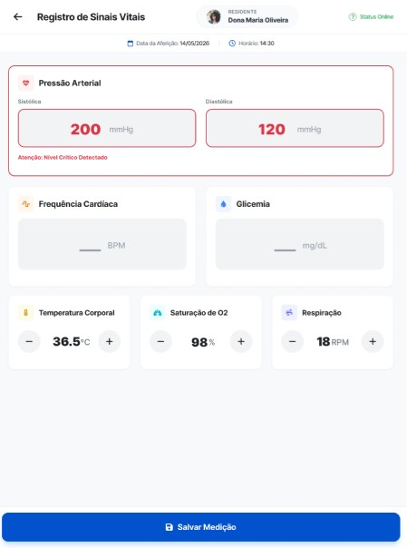
Rotina assistencial
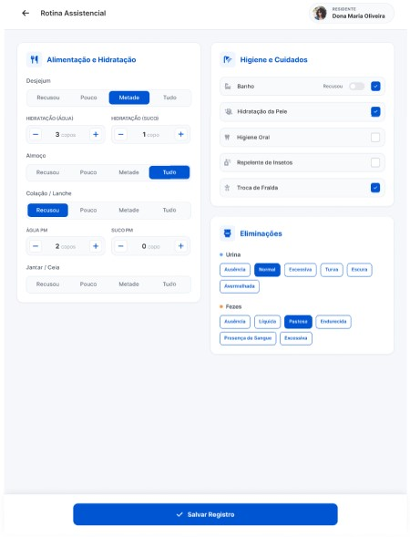
Medicamentos
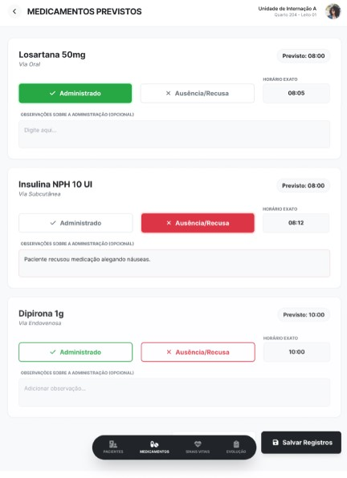
Feedback de sucesso
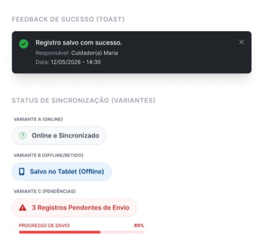
Histórico de Revisão
| Data | Versão | Descrição | Autor |
|---|---|---|---|
| 18/05/2026 | 1.0 | Inclusão dos wireframes apresentados pelo cliente e do protótipo de alta fidelidade validado. | Enzo Menali |